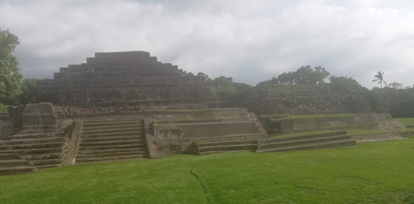

Explore El Tazumal
El Tazumal is one of the most impressive archaeological treasures in El Salvador, showcasing the engineering and spiritual life of the ancient Mayan civilization.
What to Expect:
- Ancient Pyramids: Towering ruins over 24 meters tall with altars and stepped platforms.
- Sacred Atmosphere: Ceremonial grounds believed to host offerings and Mayan rituals.
- Engineering Marvels: Advanced drainage systems built centuries ago still visible today.
- Artifacts: Visit the on-site Stanley Boggs Museum to see sculptures, burial items, and ceremonial tools.
- Cultural Gateway: Located in Chalchuapa, near vibrant markets and colonial churches.
This site offers a deep connection to El Salvador’s pre-Columbian roots—ideal for history lovers, families, and anyone curious about Mesoamerican heritage.